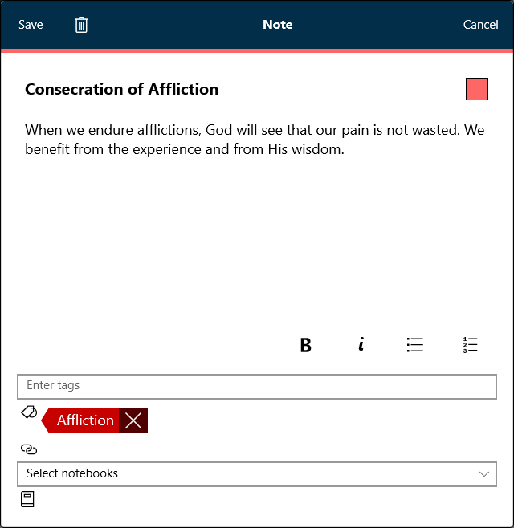
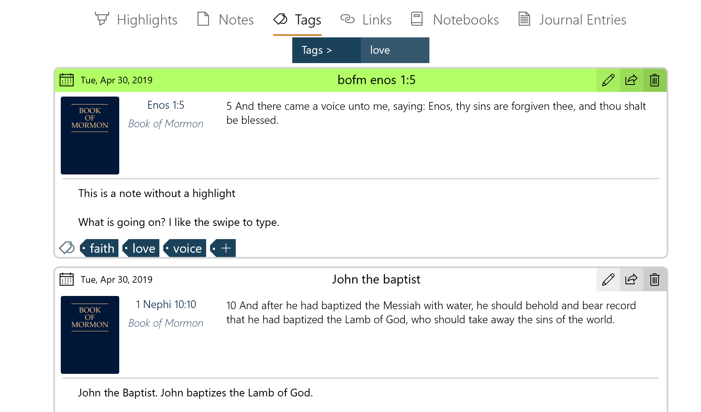

How Do I Work with Tags - Silent Video
How Do I Work with Tags - Silent Video How Do I Work with Tags - Silent Video
Tags are a way for you to organize scriptures and other selections of gospel content by topic. As you go through your gospel study, you can tag various references with relevant tags to create a list of useful references organized by topic, much like a personal topical guide.
There are three ways to tag content in Gospel Library for Windows. The first is with the Tag option in the context menu—the menu that appears when you press the hint bubble ( ) that appears when you select text. The second is with the Tag button (
) that appears when you select text. The second is with the Tag button ( ) on the Annotate ribbon, pictured below. You can also tag existing annotations in the Annotations Editor.
) on the Annotate ribbon, pictured below. You can also tag existing annotations in the Annotations Editor.

For a closer look at the Annotate ribbon, see Chapter 4: How Do I Mark Scriptures and Other Gospel Content?
To add a tag, first select the text you wish to tag, press the either Tag option in the Context Menu or the Tag button in the Annotate ribbon. The Annotations Editor (pictured below) will appear.

Type the name of each tag you wish to add to the selection and add a comma or press the enter key after each. If you have already used a tag before on another selection, it will appear in the list of suggestions as you type. You can press the existing tag to autofill the text box for you. Once you are done adding tags, press Save.
You can also add a note at the same time you add a tag.
To edit the tags associated with a selection, press the edit () button at the top-right corner of the note box containing the tag you wish to edit. This will open the annotations editor. To add a new tag, type the name of the tag and press enter. To remove a tag from the selected text, press the Remove button (). When you are finished, press save.
Pressing the Delete button at the top-left of the Annotations editor will remove all tags, notes, and highlights associated with the tagged text.
The Annotations page provides a quick and easy way to access all of your tags from wherever you are in Gospel Library. To open the Annotations page, press the Annotations button () on the navigation bar on the left. In the Annotations page, select the Tags tab, then choose a tag. Everything that has been tagged with the selected tag will appear in a list below the tag name, as in the picture below.
You can navigate to a tag by pressing on it in the Annotations pane. Alternatively, you can pnavigate to the tagged text by pressing the reference to the right of the book.
You can quickly add a recently-used tag to text by pressing the arrow next to Tag in the context menu, then selecting the tag you need.